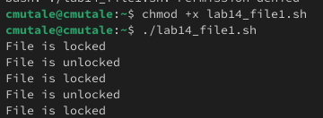
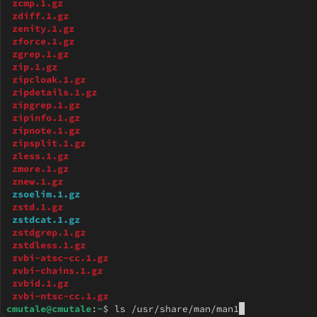
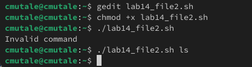
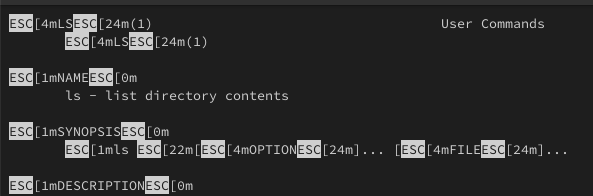
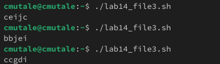

Информация
Докладчик
Цель работы
Изучить основы программирования в оболочке ОС UNIX. Научиться писать
более сложные командные файлы с использованием логических управляющих
конструкций и циклов.
Задание
Написать командный файл, реализующий упрощённый механизм
семафоров.
Реализовать команду man с помощью командного файла.
Используя встроенную переменную $RANDOM, написать командный файл,
генерирующий случайную последовательность букв латинского алфавита.
Выполнение лабораторной
работы
командный
файл, реализующий упрощённый механизм семафоров
lockfile="./lock.file"
exec {fn}>$lockfile
while test -f "$lockfile"
do
if flock -n ${fn}
then
echo "File is locked"командный
файл, реализующий упрощённый механизм семафоров
sleep 5
echo "File is unlocked"
flock -u ${fn}
else
echo "File is locked"
sleep 5
fi
done командный
файл, реализующий упрощённый механизм семафоров

результаты кода
Реализовать
команду man с помощью командного файла
В /usr/share/man/man1 находятся архивы текстовых файлов, содержащих
справку по большинству установленных в системе программ и команд:

ls /usr/share/man/man1
Реализовать
команду man с помощью командного файла
a=$1
if test -f "/usr/share/man/man1/$a.1.gz"
then less /usr/share/man/man1/$a.1.gz
else
echo "Invalid command"
fiРеализовать
команду man с помощью командного файла

проверка командного файла
man
Реализовать
команду man с помощью командного файла

проверка командного файла
man
написать
командный файл, генерирующий случайную последовательность букв
латинского алфавита.
echo $RANDOM | tr '0-9' 'a-zA-Z'

запуск скрипта
Выводы
При выполнении данной работы я научилась писать более сложные
командные файлы с использованием логических управляющих конструкций и
циклов.